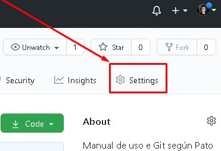
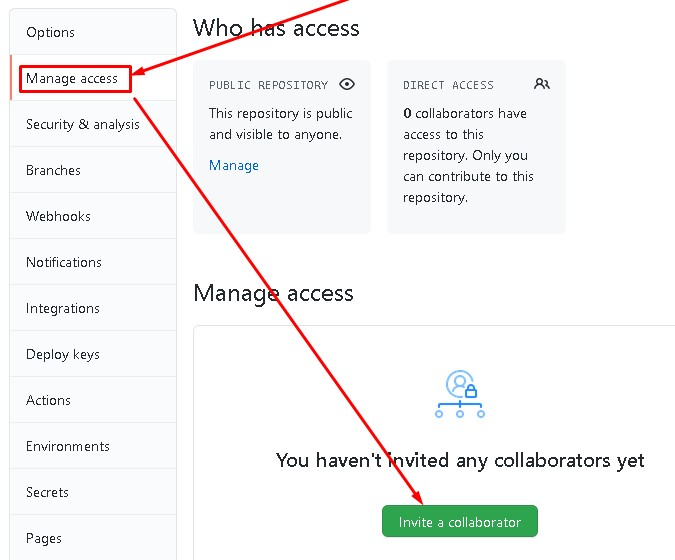

Ramas.
- git branch rama's_name
- Crea una rama con el nombre que se especifique, las ramas se crean en la rama principal (main).
- git branch
- Muestra las ramas creadas.
- git checkout rama's_name
- Se posiciona en la rama especificada (rama's_name) para trabajar sobre esta.
- git pull origin nombre_de_la_rama
- Importa la rama creada o los cambios que esten en el repositorio remoto al repositorio local.
- git push origin rama's_name
- Manda los cambios de la rama en la que se está posicionado a la rama especificada (rama's_name) del repositorio remoto.
Cuando se trabaja con un compañero en el proyecto, el creador del proyecto en GitHub le tiene que dar acceso al proyecto para que el compañero pueda subir sus aportaciones de código o para clonar el proyecto en caso de que sea privado.
 Al darle acceso a un usuario para que modifique o aporte en nuestro proyecto, nos brindarán un link para compartirlo con el usuario colaborador e invitarlo al proyecto, una vez que acepte la invitación podrá iniciar a hacer aportaciones a nuestro proyecto.
Merge.
Generalmente es el líder del proyecto, product manager o el CTO el que se encarga de unir las ramas cuando ya el trabajo esta completado por lo que debe hacer pull con la rama que desea unir, después verifica que el código este correcto y hace un merge (unión de ramas).
- git checkout main
- Se dirige a la rama principal que es a la que se le adicionarán las aportaciones de las otras ramas.
- git merge nombre_de_la_rama_secundaria
- Se le agregan las aportaciones de alguna rama secundaria a la rama principal.
- git pull origin main
- Verifica que no haya cambios externos que eviten hacer el push.
- git push origin main
- Se sube a GitHub los cambios en el repositorio.
Al hacer un merge la rama secundaria desaparecerá y todo su contenido se guardará en la rama main, así que prácticamente es como si se hicieran cambios en la rama main, se agregaran al stage (git add .) y se hiciera un commit.
Al hacer el merge se abrirá un entorno dentro de la consola en el que se tiene que escribir un mensaje como si fuera un commit, después se presiona ESC, seguido de SHIFT + Z y de nuevo SHIFT + Z.